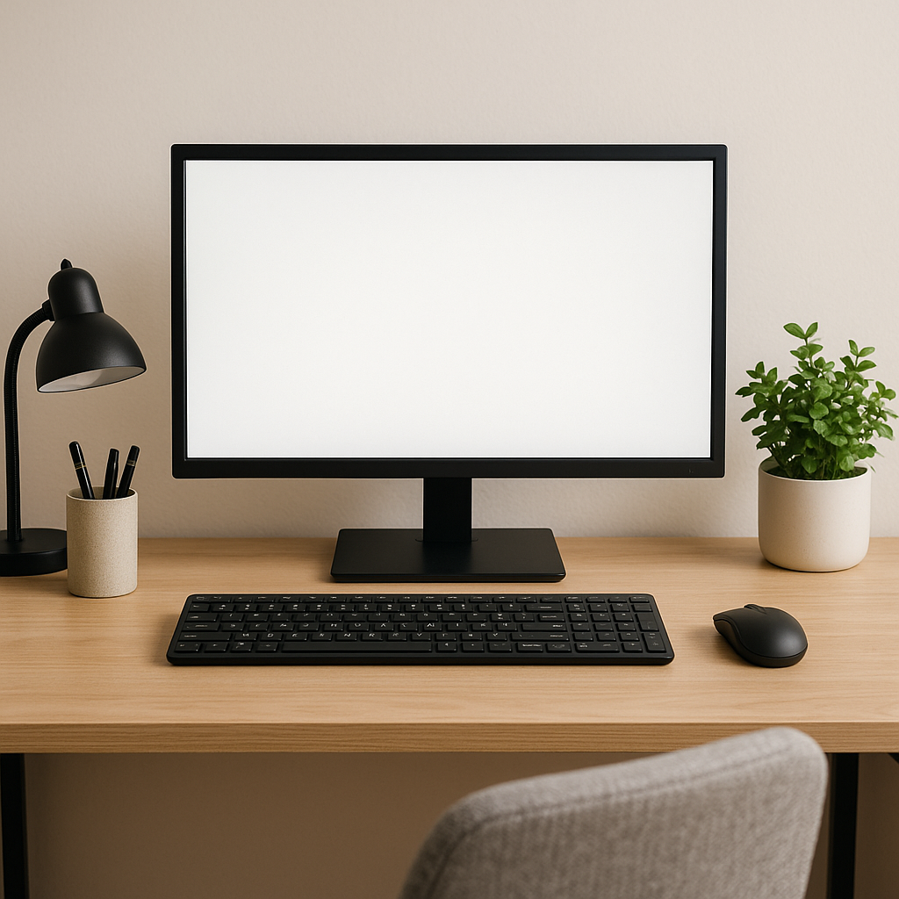
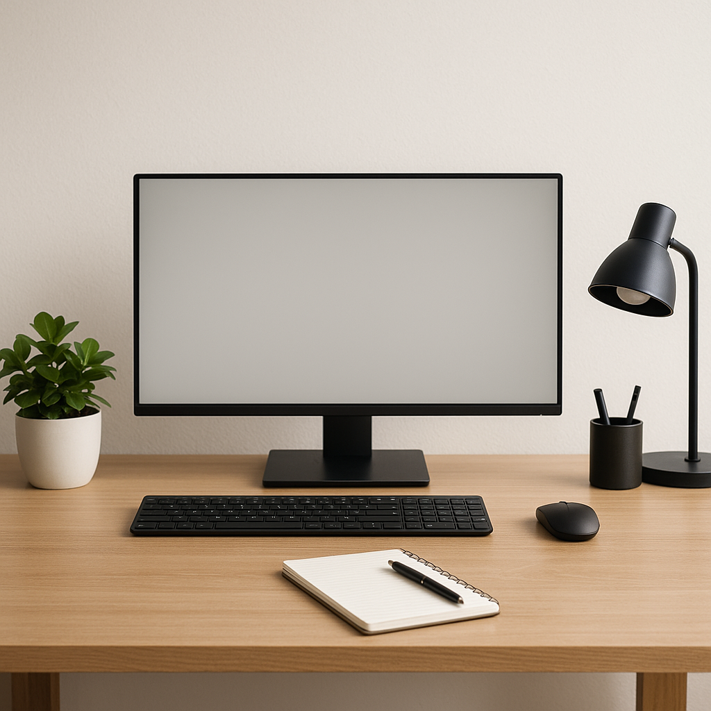

Creating an Affordable Productivity-Boosting Desk Setup
In a world where remote work and hybrid models have become the norm, having a dedicated, efficient workspace is essential. Luckily, you don’t need to spend a fortune to create a desk setup under $200 that promotes productivity. Here’s how to build your ideal workspace on a budget.
Essential Elements of a Productive Desk Setup
Your desk setup should include the following components:
- Desk
- Chair
- Monitor (optional but recommended)
- Keyboard and Mouse
- Lighting
- Organization Tools
1. Choosing the Right Desk
A functional desk sets the foundation for your workspace. For under $100, consider options like:
- Furinno Simple Design Coffee Table - Priced around $50, it offers ample surface area for your laptop and writing.
- Ameriwood Home Haven Retro Desk - A stylish choice at approximately $85, providing both aesthetics and functionality.
2. Ergonomic Chair
Investing in a good chair is crucial for long hours at your desk. Look for:
- Furmax Ergonomic Office Chair - Usually priced around $75, it offers lumbar support and comfort.
- Hbada Office Task Desk Chair - Around $90, it’s stylish and provides good seating posture.

3. Optional Monitor
If your budget allows (or you find a good deal), adding a second screen can significantly enhance productivity. Consider:
- ASUS VS228H-P 21.5” Monitor - Available for about $120, it provides great image quality for work and multitasking.
- Acer SB220Q 21.5 Inch Full HD Monitor - At around $110, it's budget-friendly and offers excellent clarity.
4. Keyboard and Mouse
For comfort and efficiency, invest in a reliable keyboard and mouse:
- Logitech MK270 Wireless Keyboard and Mouse Combo - Available for $30, it offers great functionality and wireless convenience.
- Razer Cynosa Lite Gaming Keyboard - Priced around $50, provides excellent tactile feedback.
5. Proper Lighting
Good lighting is essential to reduce eye strain. Options include:
- BenQ e-Reading LED Desk Lamp - Priced around $70, it’s adjustable and provides optimal light without glare.
- TaoTronics LED Desk Lamp - At about $40, it offers multiple brightness settings and USB charging.
6. Organizational Tools

Keep your workspace clutter-free with organizational tools:
- Simple Houseware Desk Organizer - Priced at around $25, it holds pens, paper, and other essentials.
- Amazon Basics Mesh Collection - For about $30, this collection provides various storage solutions.
Putting It All Together
By selecting wisely, you can create a productivity-boosting desk setup under $200:
- Desk: $50
- Chair: $75
- Monitor: $110
- Keyboard and Mouse: $30
- Lighting: $40
- Organizer: $25
Total: $430 (Optional monitor not included in the primary setup)
Focus on the essentials first, and ensure comfort and efficiency come first. You may also find good deals on these items at discount stores or during seasonal sales.
Final Thoughts
Creating a productive desk setup need not be an expensive endeavor. By carefully selecting each component, you can enhance your workspace without exceeding your budget. Focus on comfort, efficiency, and organization to maximize your productivity.